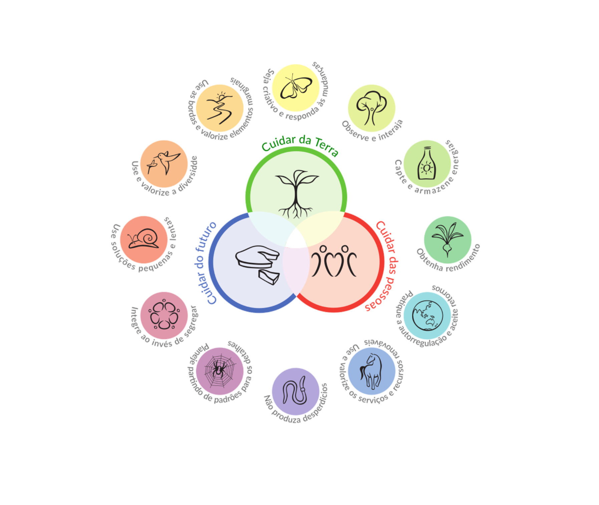
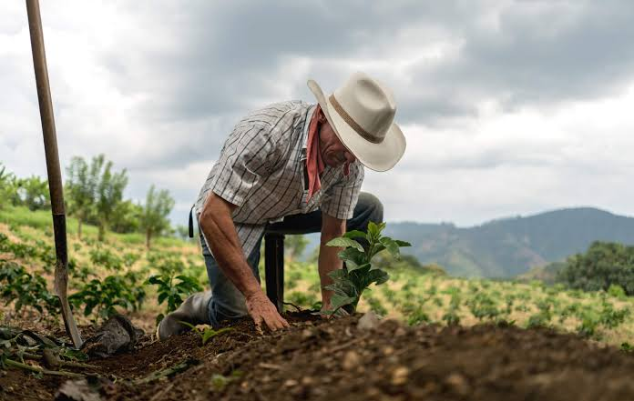
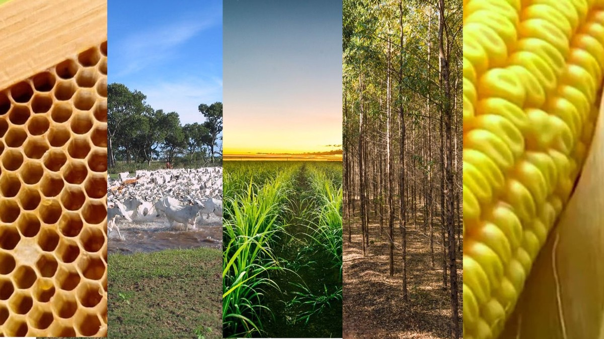

Princípios de Sustentabilidade no Campo
Conservação dos Recursos Naturais:
- Uso responsável de água, solo e biodiversidade: O uso responsável de água, solo e biodiversidade envolve técnicas de irrigação eficientes, preservação de fontes hídricas, rotação de culturas, adubação orgânica, e proteção de habitats naturais para garantir a sustentabilidade e a saúde dos ecossistemas agrícolas.
- Preservação de matas ciliares e áreas de reserva: A preservação de matas ciliares e áreas de reserva é crucial para proteger cursos d'água, prevenir a erosão do solo e manter a biodiversidade. Essas áreas funcionam como barreiras naturais que filtram poluentes e sedimentos, além de oferecerem habitat para diversas espécies. A proteção dessas regiões é essencial para a saúde ambiental e a sustentabilidade dos ecossistemas.
Práticas Sustentáveis no Campo
- Agroecologia: A integração de práticas agrícolas com conhecimentos ecológicos busca harmonizar a produção agrícola com a conservação ambiental. Isso envolve o uso de técnicas como rotação de culturas, agrofloresta, e controle biológico de pragas para promover a saúde do solo e da biodiversidade, aumentando a sustentabilidade e a resiliência dos sistemas agrícolas.
- Foco na diversidade de cultivos e na resiliência ambiental: O foco na diversidade de cultivos e na resiliência ambiental envolve cultivar uma variedade de plantas em vez de monoculturas. Essa prática melhora a saúde do solo, reduz a dependência de pesticidas e fertilizantes químicos, e promove a biodiversidade, criando um ecossistema mais equilibrado. A diversidade de cultivos também aumenta a resiliência das lavouras contra pragas, doenças e condições climáticas adversas, tornando-as mais adaptáveis às mudanças ambientais e garantindo uma produção sustentável a longo prazo.
Benefícios da Sustentabilidade no Campo
- Ambientais: Redução do impacto ambiental, conservação dos ecossistemas, e mitigação das mudanças climáticas.
- Econômicos: Aumento da eficiência e redução de custos a longo prazo, acesso a novos mercados e consumidores conscientes.
- Sociais: Melhoria na qualidade de vida das comunidades rurais, segurança alimentar e fortalecimento das economias locais.